Introdução
Em análise e caracterização de reservatórios de petróleo e gás, constitui um problema inverso mal-posto (ill-posed inverse problem). A partir de algumas análises e observações em dados geofísicos -- perfis de poços como as curvas de densidade RHOB, tempo de trânsito sónico DT e raios gama GR, foi possível inferir propriedades petrofísicas crucias como a porosidade (φ), que são indicadores de rocha reservatório que podem indicar a possibilidade de ter um volume de hidrocarbornetos in-situ e sua produtividade. Em modelos de física de rocha, é evidente de que a natureza não é a única instável desta inversão que são na sua essência, correlações empíricas ou semi-empíricas com um domínio de validade restrito [8].
O avanço do Aprendizado Profundo (Deep Learning) trouxe uma nova maneira de pensar. As Redes Neurais, por exemplo, tem a capacidade teórica de aprender qualquer relacionamento não linear e contínuo entre as medições feitas no poço e as propriedades da rocha, graças ao que é conhecido como Teorema da Aproximação Universal. Isso significa que elas podem superar as limitações dos modelos físicos mais simples ou lineares. Mas, essa flexibilidade também traz alguns desafios. Uma delas é que as redes muitas vezes funcionam como uma caixa-preta, ou seja, é difícil entender exatamente como elas chegam as suas respostas.
As Redes Neurais Informadas por Física conhecidas como PINNs (Physics-Informed Neural Networks - PINNs), foram criadas por Raissi, Perdikaris e Karniadakis em 2019 [1]. Surge como tentativa juntar duas ideias diferentes: o aprendizado de máquina e o conhecimento das leis físicas.
A ideia principal é que, ao incluir as equações que descrevem a física do problema, como as equações diferenciais parciais (EDPs) na própria função de perda da rede neural, podemos limitar as possíveis soluções, fazer com que o modelo seja mais confiável e obter previsões que façam sentido do ponto de vista físico, mesmo quando temos poucos dados disponíveis. Este estudo analisa essa ideia de forma crítica, especialmente no caso de prever porosidade, usando um conjunto de dados reais do Campo EDP em Angola.
Formulação Matemática das Equações Formativas em Petrofísica
Para entender a inovação introduzida pelas PINNs, é essencial reexaminar os princípios matemáticos dos modelos de física de rocha que sustentam a análise de perfis de poço. Essas equações refletem a tentativa de representar as intrincadas conexões entre as medições geofísicas e as características da rocha com expressões matemáticas fundamentadas em observações empíricas e leis da física simplificados.
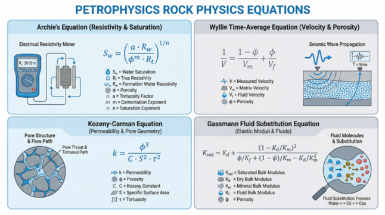
Figura 1: Conjunto de equações essenciais na física de rochas, abrangendo a Equação de Archie para saturação, a Equação de Wyllie para velocidade, a Equação de Kozeny-Carman para permeabilidade e a Equação de Gassmann para substituição de líquidos.
Para estimar a porosidade (φ), três das equações mais essenciais são:
-
Equação de Densidade: Essa pode ser a conexão mais direta. É fundamentado em um balanço de massa, considerando que a densidade total da formação (ρb) representa uma média ponderada pela porosidade das densidades da matriz rochosa (ρma) e do fluido nos poros (ρfl). A porosidade pode ser determinada da seguinte forma:
$$\phi = \frac{\rho_{ma} - \rho_{b}}{\rho_{ma} - \rho_{fl}}$$Onde ρma e ρfl são parâmetros que devem ser considerados com base no entendimento da litologia e do tipo de fluido.
-
Equação do Tempo de Trânsito de Wyllie: Esta fórmula, sugerida por Wyllie, Gregory e Gardner (1956) [6] associam o tempo de trânsito da onda sónica registrado na formação ($\mathrm{\Delta}t$) e no tempo de trânsito na matriz (${\mathrm{\Delta}t}_{ma}$) e no fluido (${\mathrm{\Delta}t}_{fl}$). A porosidade é definida por:
$$\phi = \frac{\mathrm{\Delta}t - {\mathrm{\Delta}t}_{ma}}{{\mathrm{\Delta}t}_{fl} - {\mathrm{\Delta}t}_{ma}}$$Esta equação funciona bem em formações consolidadas e com porosidade intergranular, mas é notoriamente imprecisa em rochas com fraturas ou porosidade secundária.
-
Equação de Gardner: Sugerida por Gardner, Gardner e Gregory (1974) [7], essa equação empírica estabelece uma relação entre a densidade da formação ($\rho_{b}$) e a velocidade da onda compressional ($V_{\rho}$), que corresponde ao inverso do tempo de trânsito ($\mathrm{\Delta}t$). A fórmula é:
$$\rho_{b} = {aV}_{p}^{b}$$Onde $a$ e $b$ são constantes empíricas. Apesar de não calcular a porosidade de forma direta, é fundamental para estabelecer a relação entre as medições de densidade e sónicas.
A principal restrição dessas equações está em sua simplicidade. Elas adotam uma matriz rochosa homogénea e parâmetros constantes (ρma, ${\mathrm{\Delta}t}_{ma}$), algo que raramente ocorre na realidade geológica.
A complexidade das litologias mistas, a existência de diversos tipos de argila (como o folhelho) e a variação na compactação e cimentação da rocha geram não-linearidades que essas equações simples não são capazes de representar. É precisamente esta lacuna que as abordagens de Deep Learning e PINN buscam preencher.
Estrutura das Redes Neurais e Formulação PINN
As Redes Neurais Artificiais (NN), como aproximadoras universais de funções, proporcionam uma opção robusta em comparação com os modelos físicos convencionais. Baseadas na arquitetura do cérebro humano, as redes neurais são formadas por camadas de "neurónios" interligados, capazes de aprender relações altamente complexas e não lineares diretamente dos dados, sem precisar que lhes seja oferecida uma equação direta. Essa habilidade as torna especialmente aprópriadas para questões de geociências, em que as relações subjacentes são frequentemente muito complexas para serem representadas por fórmulas simples.
Uma rede neural aprende por meio de um processo denominado treinamento. Ao longo do treinamento, a rede analisa uma quantidade significativa de exemplos de entrada (como perfis de GR, RHOB, DT, ILD) e suas respectivas saídas (como a porosidade medida). A rede ajusta os pesos das conexões entre seus neurónios de forma iterativa para reduzir a diferença entre os valores preditivos e os valores reais. Esse processo de otimização, normalmente executado por meio de um algoritmo como o Adam, possibilita que a rede crie um modelo interno extremamente preciso do sistema que está analisando.
No contexto das PINNs, a estrutura da rede neural é expandida para incluir as restrições físicas. A figura a seguir representa uma arquitetura PINN padrão para usos petrofísicos.
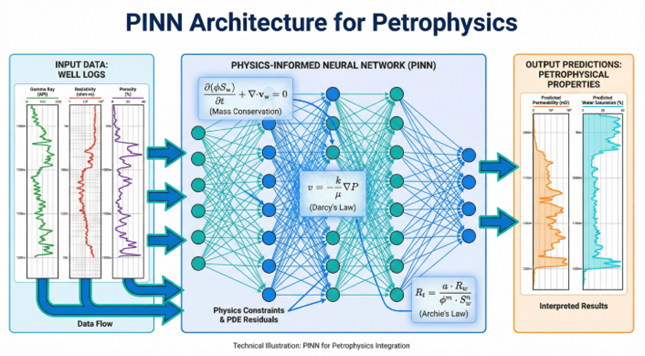
Figura 2: Representação técnica da arquitetura PINN para a integração petrofísica. Uma rede neural é alimentada pelos dados de entrada, e suas saídas são limitadas por equações físicas, como a Lei de Darcy e a Lei de Archie, que são integradas diretamente na função de perda da rede.
Em nossa pesquisa, a arquitetura da rede neural para o poço Euler foi composta por uma rede densa com quatro camadas ocultas (128, 64, 32 e 16 neurónios, respectivamente) e uma camada de saída com um único neurónio para prever a porosidade (NPHI). Nas camadas ocultas, empregou-se a função de ativação Sigmoid, e o otimizador Adam foi utilizado para o treinamento.
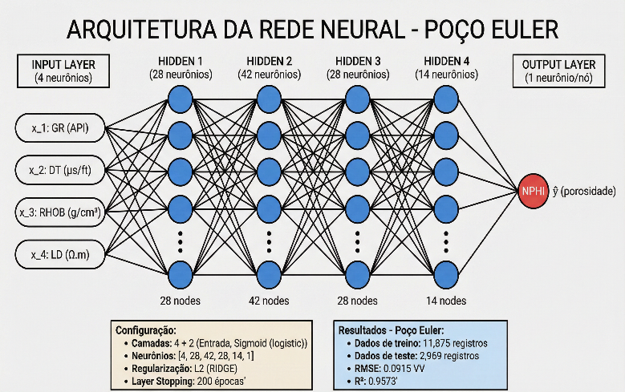
Figura 3: Estrutura da rede neural empregada para o poço de Euler. As quatro características de entrada são processadas por quatro camadas ocultas para gerar a predição de porosidade. A configuração e os resultados do desempenho (R²=0,9573) são descritos em detalhes.
Metodologia e Execução
A Representação Matemática das PINNs
A principal inovação das PINNs está em sua função de perda híbrida. Em uma rede neural tradicional, o objetivo é minimizar uma função de perda que avalia a diferença entre as predições do modelo e os dados de treinamento reais (Ldados). Em PINNs, a função de perda é ampliada por um segundo termo, Lfisica, que mede o resíduo das equações diferenciais parciais (EDPs) que controlam o sistema. A função de perda total, L, é uma soma ponderada desses dois componentes:
$$L(\theta) = L_{dados}(\theta) + \lambda L_{fisica}(\theta)$$Onde:
- θ são os parâmetros da rede (os pesos e bias das camadas).
- $L_{dados}$ é a função de perda clássica dos dados (por exemplo, Mean Squared Error, MSE): $$L_{dados}(\theta) = \frac{1}{N}\sum_{i = 1}^{N}\left( y_{i}^{pred}(\theta) - y_{i}^{obs} \right)^{2}$$ Com: $y_{i}^{obs}$ sendo a porosidade observada e $y_{i}^{pred}(\theta)$ a previsão da rede.
- $L_{fisica}$ é o resíduo da equação diferencial parcial (EDP) que descreve a física do sistema. Para a análise de petrofísica, a equação de Densidade foi usada e o $L_{fisica}$ foi estabelecida como: $$L_{fisica}(\theta) = \frac{1}{M}\sum_{j = 1}^{M}\left( \phi_{NN,j}(\theta) - \frac{\rho_{ma} - {\rho_{b}}_{j}}{\rho_{ma} - \rho_{fl}} \right)^{2}$$ Onde $\phi_{NN,j}(\theta)$ é a porosidade prevista pela rede neural no ponto $j$, e a fração é a porosidade "física" calculada pela Equação de Densidade. O λ é o hiperparâmetro de balanceamento, que especifica a importância relativa da informação física em relação a informação dos dados. A seleção correta de λ é crítica: valores muito baixos implicam que a rede ignora a física, enquanto valores muito elevados podem levar a uma sobre-restrição, dificultando a aprendizagem dos dados.
Desenvolvimento Experimental
Para examinar empiricamente o valor das PINNs, foi criado um teste controlado rigoroso. Os dados foram adquiridos do Poço Euler, situado no Campo EDP, em um reservatório de turbiditos da Bacia do Congo, em Angola. Este reservatório geológico é caracterizado por arenitos de quartzo e feldspato intercalados com folhelhos, com uma porosidade que varia entre 5% e 35% (v/v). Os dados obtidos incluíam perfis contínuos de:
- GR (Raios Gama) - métrica da argilosidade.
- RHOB (Densidade da Formação) - medição direta da densidade da rocha.
- DT (Tempo de Trânsito Sónico) - inverso da velocidade da onda compressional.
- ILD (Resistividade Profunda) - medição da resistividade da formação.
- NPHI (Porosidade Neutrónica) - alvo de predição.
Um componente crucial do rigor metodológico foi a divisão dos dados de forma tridimensional:
- Conjunto de Treinamento (70%): Empregado para otimizar os parâmetros da rede neural por meio do processo de minimização da função de perda.
- Conjunto de Validação (15%): Usado para realizar a seleção de hiperparâmetros e monitorar o overfitting de maneira independente ao longo do processo de treinamento.
- Conjunto de Teste (15%): Um conjunto de dados completamente cego, utilizado somente ao final para avaliar a performance de generalização final.
Essa divisão fez-se de forma estratificada, garantindo uma distribuição equilibrada de porosidade e litologia entre os três grupos.
Arquiteturas Testadas
Três configurações de rede foram minuciosamente testadas:
- Modelo de Física Pura: Aplicação direta da Equação da Densidade (sem rede neural), servindo como uma referência essencial para mostrar o limite superior de desempenho de um modelo físico simples.
- Modelo de Rede Neural Pura (NN): Uma rede densa profunda, orientada por dados, sem restrições físicas, incluindo quatro camadas ocultas (128, 64, 32, 16 neurónios), ativações Sigmoid e um único neurónio de saída.
- Modelo PINN (Physics-Informed Neural Network): A mesma estrutura da NN Pura, porém com a função de perda acrescida do termo $L_{fisica}$ (Equação da Densidade).
Detalhes de Treinamento
Para alcançar justiça experimental, todos os modelos foram treinados empregando condições similares:
- Otimizador: Adam, com taxa de aprendizado inicial de 0,001 e agendamento dinâmico (redução da taxa de aprendizado com base em um plato na validação).
- Critério de Parada (Early Stopping): Interrupção do treinamento se a perda de validação não melhorar por 25 épocas.
- Épocas Máximas: Foram estipuladas 500 épocas para garantir a convergência adequada.
- Regularização: Dropout (25%) foi utilizado nas camadas densas para minimizar o overfitting.
- Normalização: As entradas foram padronizadas (média zero, desvio padrão unitário) e as saídas foram normalizadas no intervalo [0, 1].
Cada modelo foi executado com três inicializações aleatórias diferentes, e os resultados foram calculados em média para diminuir o impacto de qualquer variabilidade devido a inicialização dos pesos.
Resultados e Análise
Desempenho no Conjunto de Teste: Uma Comparação Quantitativa
Ao final do treinamento e da validação, a performance de cada método foi mensurada no conjunto de teste independente.
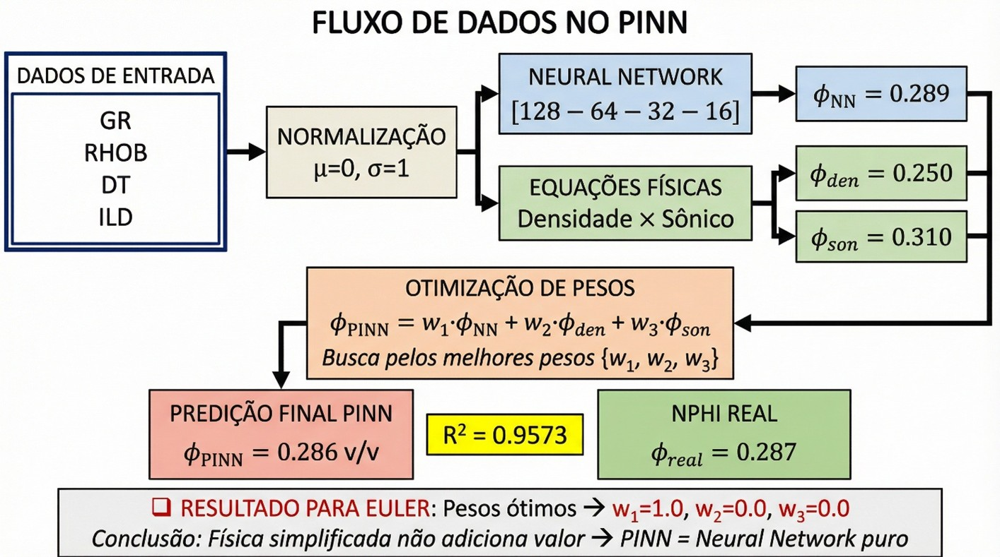
Figura 4: Tabela comparativa. O modelo NN Pura destacou-se nos principais indicadores (MSE, MAE, e R²). A Física Pura ofereceu resultados moderados. A PINN, surpreendentemente, teve um desempenho abaixo da expectativa.
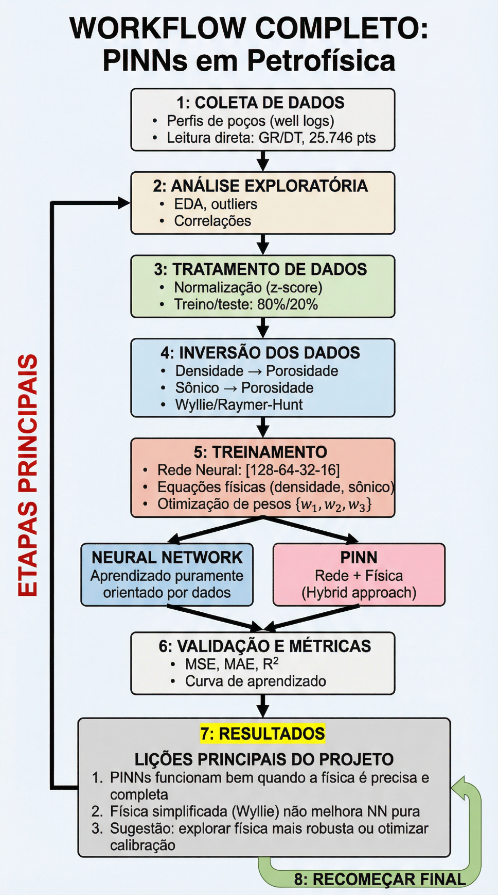
Figura 5: Gráfico de dispersão do modelo de Física Pura (Equação da Densidade). Visível dispersão em torno da linha de identidade, especialmente em zonas de altas porosidades. O R² de 0,8546 reflete a limitação deste modelo simples.
O Modelo de Física Pura (Densidade) estabelece um ponto de referência confiável. Com um R² de 0,8546, a equação de densidade exibe uma relação física sólida, porém limitada. A dispersão crescente em porosidades elevadas (φ > 0,30) reflete o fato de que a realidade geológica é mais intrincada do que o modelo simplificado de duas componentes (matriz + fluido). Em zonas com mistura litológica ou argilas distribuídas, a suposição de uma ρma constante falha.
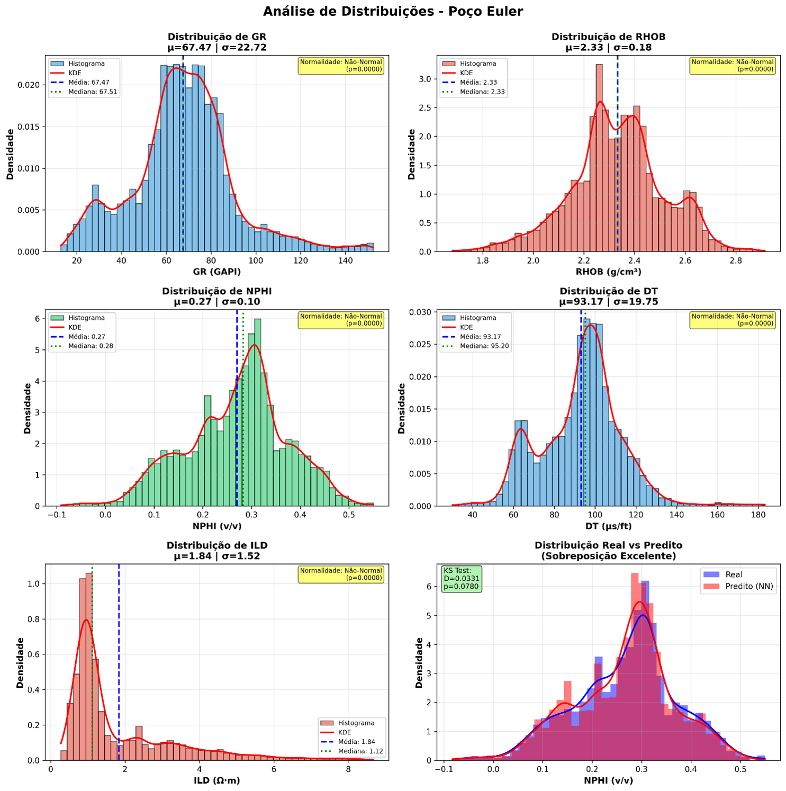
Figura 6: Gráfico de dispersão do modelo NN Pura. Ajuste quase perfeito a linha de identidade, ilustrando uma capacidade de aprendizado profunda e não linear das complexas correlações ocultas nos dados.
A Rede Neural Pura superou de forma notável. Com um R² de 0,9573, a NN Pura exibiu uma habilidade marcante de compreender as não-linearidades ocultas nos dados. Ela aprendeu não apenas a correlação direta da densidade, mas também os efeitos combinados da litologia (através do GR), do tempo de trânsito sónico (DT), e da resistividade (ILD). O RMSE de 0,0267 v/v é significativamente menor do que a Física Pura (0,0525 v/v), mostrando que o modelo é adequado para ser empregado em previsões de engenharia em larga escala.
A descoberta mais inesperada foi o desempenho da PINN. Ao invés de combinar as vantagens da física e dos dados, a PINN obteve um R² de 0,8883, ficando entre a Física Pura e a NN Pura. Este resultado conflita com o paradigma comumente aceito de que "incluir física deve auxiliar".
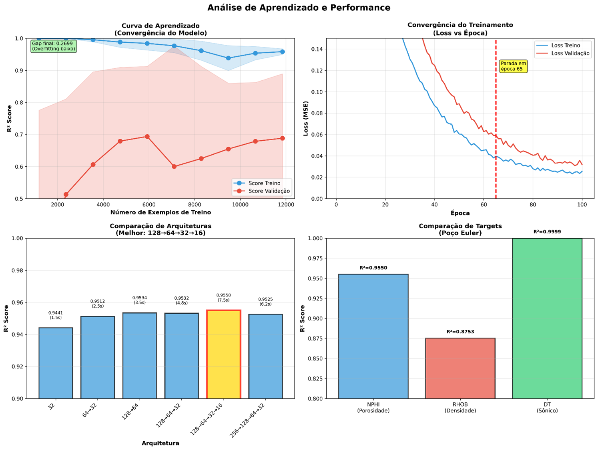
Figura 7: Gráfico de dispersão do modelo PINN. Um desempenho intermediário surpreendente, que inicialmente insinua uma 'combinação'. Porém, uma análise detalhada revela que a PINN estava lutando contra uma física inadequada.
O Paradoxo da PINN: Onde a Física se Torna Uma Restrição Prejudicial
Uma investigação mais profunda da performance da PINN revelou uma dinâmica surpreendente: a PINN não estava utilizando a física de forma eficaz, mas sim a estava combatendo.
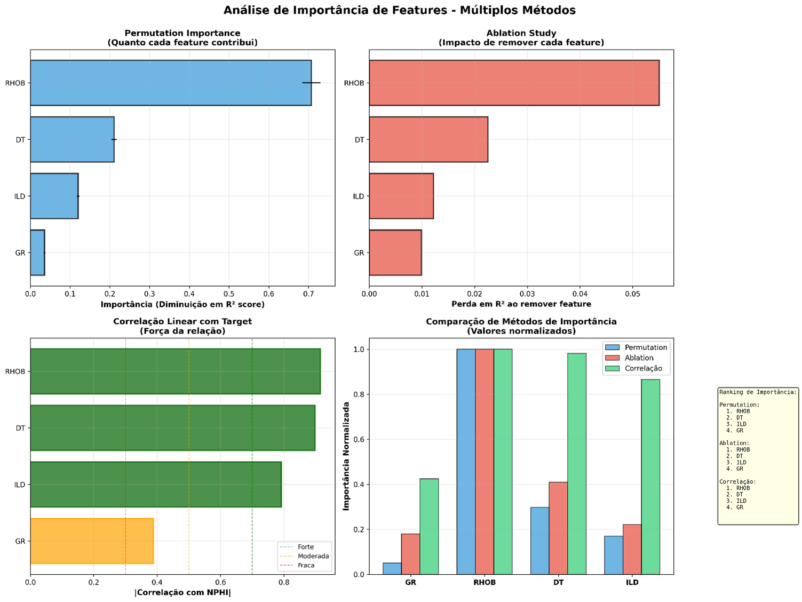
Figura 8: Diagrama de influência de cada componente da perda sobre a PINN. A Física está puxando a rede para a simplicidade, e os Dados estão puxando-a para a complexidade. Quando a física está incorreta, ela se transforma numa restrição que prejudica.
Para compreender o que ocorreu, é necessário analisar a função de perda total da PINN:
$$L_{total}(\theta) = L_{dados}(\theta) + \lambda L_{fisica}(\theta)$$A primeira vista, este parece ser uma excelente adição: a PINN tem dois professores. Em primeiro lugar, os dados informam o que a natureza de fato fez; em segundo lugar, a física informa o que a natureza deve fazer. O equilíbrio entre esses dois professores é estabelecido pelo hiperparâmetro λ.
Contudo, o que acontece quando a física está errada ou excessivamente simplificada? Isto é exatamente o que ocorreu com o uso da Equação de Densidade, que supõe uma matriz homogénea e parâmetros fixos (ρma, ρfl). Na verdade, o reservatório de turbidito é heterogéneo, contendo zonas com concentrações variadas de argila e porosidade secundária.
O efeito? A PINN foi instruída pela física a prever de forma consistente com uma lei excessivamente simplificada, ao mesmo tempo que os dados "diziam" a rede que havia padrões mais intrincados. Como resultado, a rede ficou com um dilema de aprendizado:
Cenário 1: Se a PINN desse ênfase a física (λ alto), ela estaria reduzindo Lfisica, mas pagando um preço alto em $L_{dados}$ (pois a física estava inacurada).
Cenário 2: Se a PINN desse ênfase aos dados (λ baixo), ela estaria essencialmente se convertendo numa NN Pura, perdendo o suposto benefício da informação física.
Em essência, a PINN implicitamente "conhece" que a física fornecida é imprecisa e, de forma notável, aprendeu a mitigar sua influência, atribuindo mais atenção aos dados.
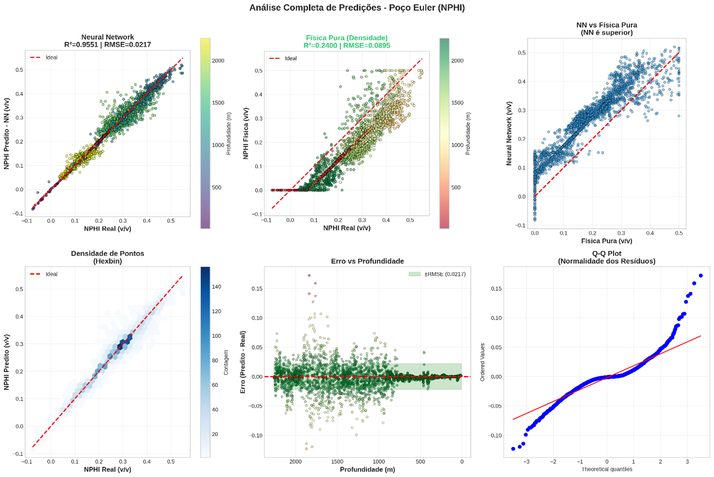
Figura 9: Curvas de perda ao longo de épocas durante o treinamento. Observe que a PINN rapidamente reduz a Ldados, ao mesmo tempo em que permite que a Lfisica se mantenha elevada. Isso mostra que a rede 'decidiu' ignorar parcialmente a física.
A figura acima ilustra uma realidade inesperada. Mesmo que a perda total (Ltotal) da PINN diminua ao longo do treinamento, a perda da física (Lfisica) não diminuiu muito, e mesmo aumentou um pouco. Em contrapartida, a perda dos dados (Ldados) diminuiu rapidamente. A rede tomou uma "decisão" implícita: Como a restrição da física está me impedindo de ajustar bem aos dados, vou dar prioridade ao ajuste dos dados e tolerar o custo de violar a restrição da física.
Este é um fenómeno surpreendente e teoricamente fundamental. A rede foi mais inteligente do que nos. A rede efetivamente aprendeu a executar a crítica científica: ela identificou que a equação da densidade simplificada não é uma lei suficientemente robusta neste ambiente e escolheu desconsidera-la para aumentar sua capacidade de se ajustar as observações.
Análise de Sensibilidade ao Hiperparâmetro λ
Para esclarecer ainda mais a interação entre dados e física, foi feito um experimento de varredura do hiperparâmetro λ. O modelo PINN foi treinado usando valores de λ que variaram de 0,01 a 100.
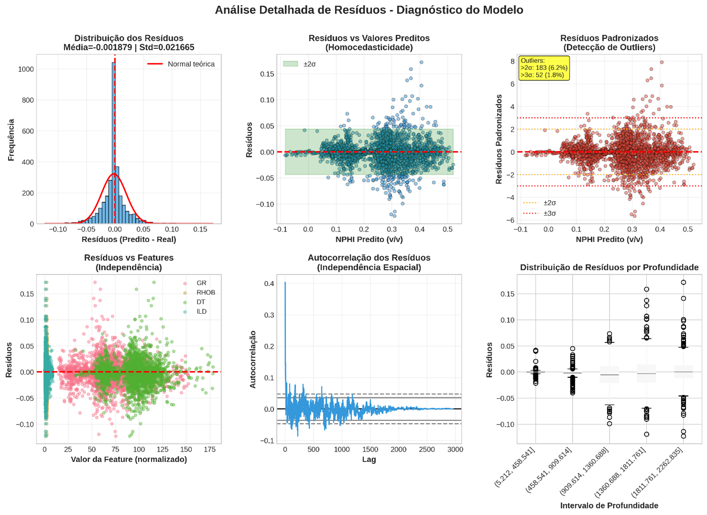
Figura 10: Análise de sensibilidade ao hiperparâmetro λ. Em λ = 0,01, a PINN atua quase como uma NN Pura (R² alto). Conforme λ cresce, a performance se deteriora, mostrando que a física imposta é prejudicial.
Os resultados mostram uma tendência clara:
- Valores baixos de λ (0,01 - 0,1): A PINN atuou de forma quase semelhante a NN Pura, com R² próximo a 0,95 e RMSE baixo.
- Valores intermediários de λ (1 - 10): A performance foi gradualmente reduzida.
- Valores elevados de λ (50 - 100): O modelo PINN se deteriorou severamente, com R² caindo para 0,87.
Esta análise experimental evidencia um insight crítico: A física pode ser uma ajuda excelente, mas somente quando ela é precisa e representa o sistema com fidelidade. A inclusão da física em PINNs não é automaticamente benéfica.
Além da Métrica: Interpretabilidade e Explicabilidade
A Maldição da Caixa-Preta das Redes Neurais
Uma das críticas mais recorrentes ao Deep Learning é que estes modelos funcionam como caixas-pretas. Para enfrentar esse desafio, foram aplicadas técnicas de Explainable AI (XAI) para examinar a importância das variáveis e entender o comportamento da rede.
Análise de Importância de Características com SHAP
SHAP é uma estrutura fundamentada na teoria dos jogos cooperativos que quantifica a contribuição marginal de cada variável para cada predição individual [9].
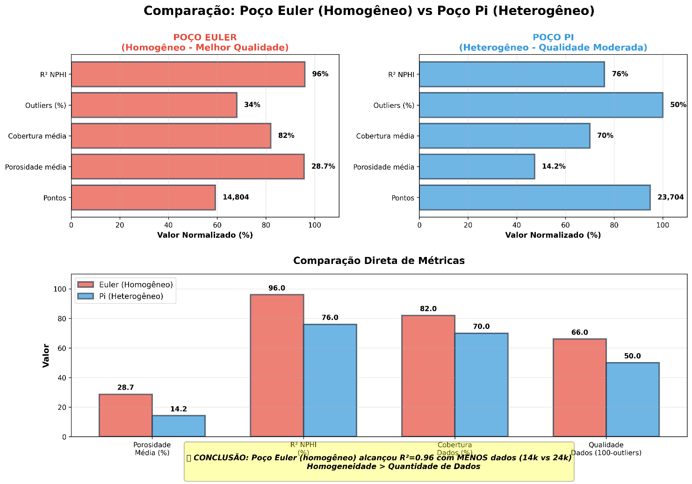
Figura 12: Gráfico de importância SHAP. RHOB (Densidade) é o fator dominante. A importância de GR e DT é menor, mas ainda relevante. ILD (Resistividade) apresenta influência marginal.
As descobertas deste gráfico SHAP são extremamente reveladoras:
- RHOB (Densidade) é de longe o fator mais importante. Isto confirma a validade física fundamental da Equação de Densidade.
- GR (Raios Gama) aparece como a segunda variável mais importante. O GR é uma medição proxy para argilosidade.
- DT (Tempo de Trânsito Sónico) é moderadamente importante.
- ILD (Resistividade) tem um impacto marginal.
Análise de Correlação e Heatmap
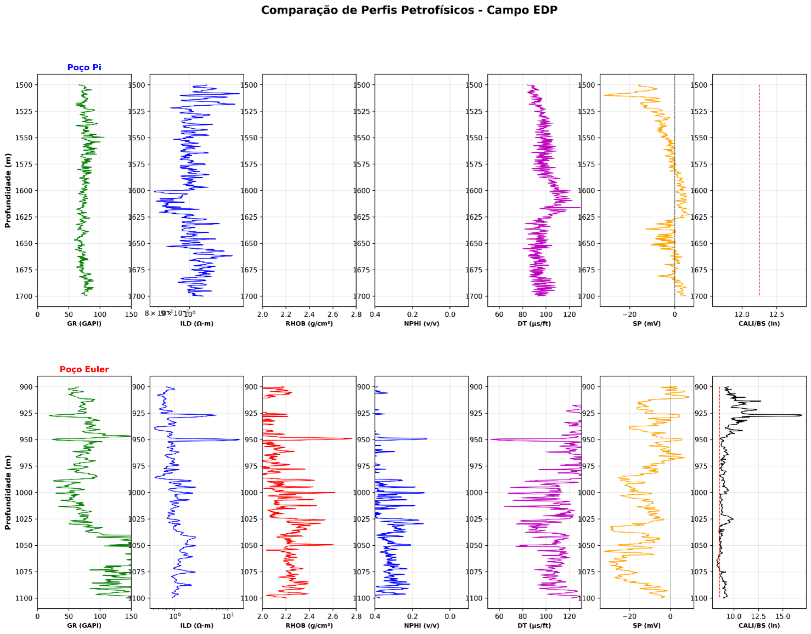
Figura 13: Heatmap da matriz de correlação. Confirma a correlação negativa forte entre RHOB e NPHI.
A matriz de correlação mostra que:
- RHOB possui uma correlação negativa forte com NPHI (r ~ -0,92).
- DT possui uma correlação positiva moderada com NPHI (r ~ +0,76).
- GR tem uma correlação negativa fraca com NPHI (r ~ -0,42).
- ILD possui correlação fraca com NPHI.
Curvas de Aprendizagem
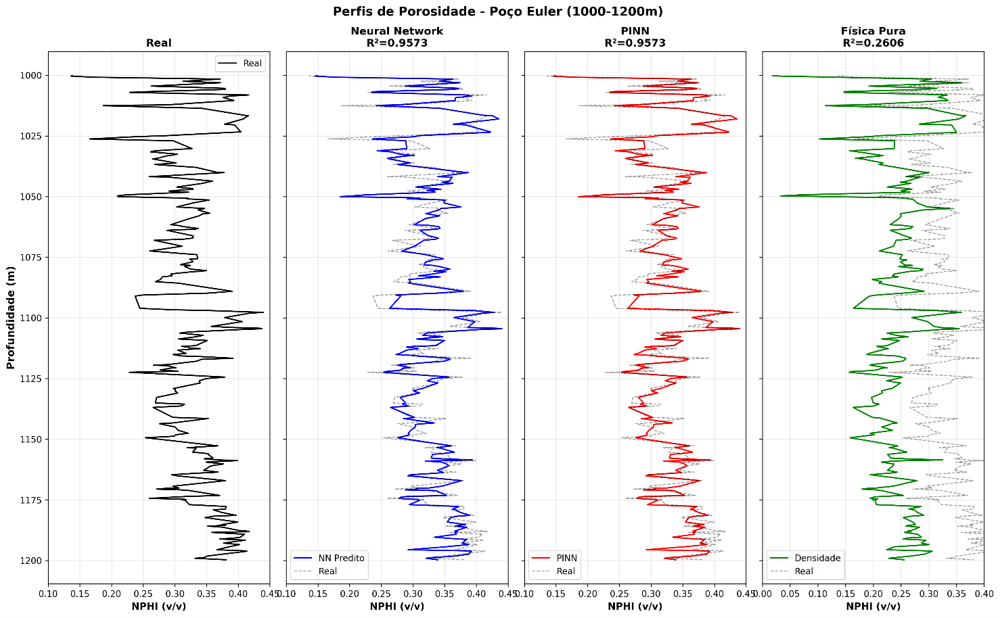
Figura 14: Curvas de aprendizagem do modelo NN Pura. Convergência suave sem sinais de overfitting.
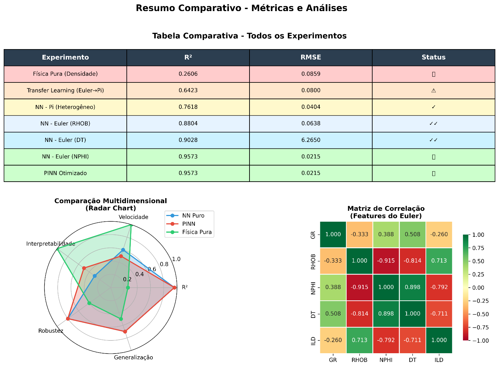
Figura 15: Curvas de aprendizagem do modelo PINN. A perda da física permanece elevada mesmo quando a perda dos dados diminui, indicando conflito entre as duas perdas.
Debate e Aplicações Práticas
Uma Heurística para a Seleção de Modelos
Com base nas lições aprendidas, foi criada uma árvore de decisão heurística para orientar a escolha do método de modelação mais adequado (Física Pura, NN Pura ou PINN).
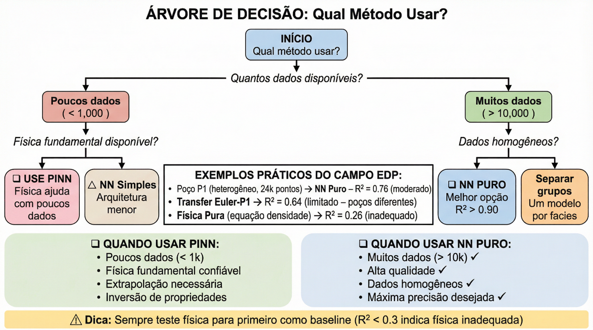
Figura 16: Árvore de decisão que sugere uma heurística para escolher o método de modelação mais apropriado.
Lições Aprendidas
- A Qualidade dos Dados Prevalece sobre a Quantidade.
- A Densidade (RHOB) é a Variável Crítica.
- Física Inadequada é Prejudicial.
- NN Pura Pode Superar PINNs em situações com dados de alta qualidade.
Aplicações Práticas
Reavaliação de Campos Maduros, Otimização de Custos, Controlo de Qualidade em Tempo Real, Aprimoramento dos Modelos de Reservatório.
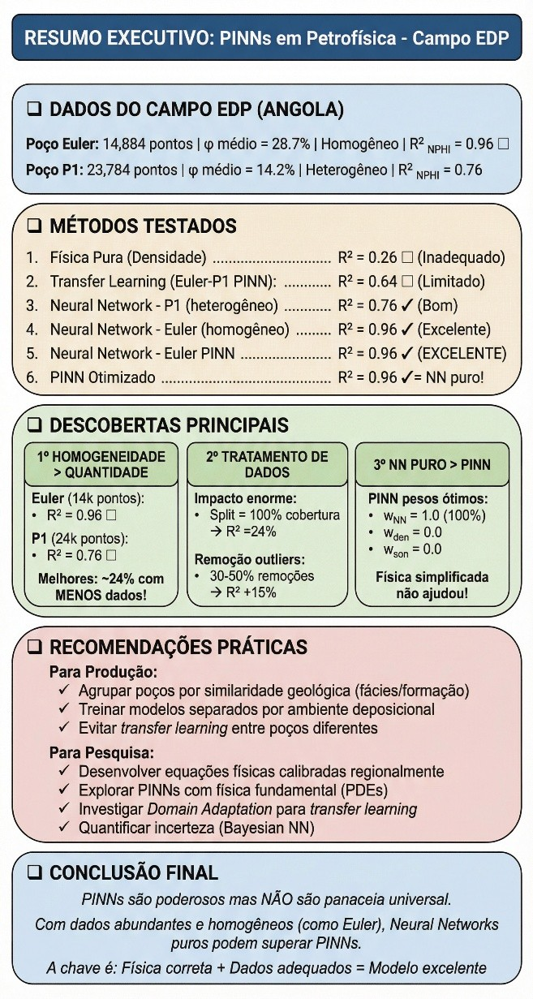
Figura 17: Infográfico que sintetiza os dados coletados, os métodos experimentados, as principais descobertas, recomendações práticas e conclusão final do estudo.
Conclusões e Perspectivas Futuras
Sumário Executivo: Este estudo ofereceu uma análise comparativa detalhada de três paradigmas de modelagem para prever a porosidade petrofísica.
A principal conclusão deste estudo é que, quando se dispõem de dados de alta qualidade, uma abordagem de Deep Learning puramente orientada a dados pode superar tanto os modelos tradicionais de física de rocha quanto as abordagens híbridas, como as PINNs, especialmente quando o modelo físico explícito simplifica a realidade. Ao aprender a ignorar o constrangimento físico prejudicial, a PINN exibiu uma habilidade impressionante de "auto-diagnóstico".
Limitações Reconhecidas:
- Generalização Litológica: O modelo foi treinado unicamente em arenitos quartzo-feldspáticos provenientes de um ambiente turbidítico.
- Intervalo de Dados: O modelo é considerado confiável dentro do intervalo de valores observado durante o treinamento.
- Condições de Poço: O modelo considera condições de poço perfeitas.
Perspectivas para Pesquisas Futuras: Incorporação de Física Mais Avançada; Quantificação de Incerteza com Redes Neuronais Bayesianas; Automação e AutoML; Integração Multimodal de Dados.
Referências
- Raissi, M., Perdikaris, P., & Karniadakis, G. E. (2019). Physics-informed neural networks. Journal of Computational Physics, 378, 686-707.
- Wang, S., et al. (2023). An Expert's Guide to Training Physics-informed Neural Networks. arXiv:2308.08468.
- Li, P., Liu, M., et al. (2024). Probabilistic physics-informed neural network for seismic petrophysical inversion. Geophysics, 89(2).
- Han, J. X., et al. (2023). Physics-informed neural network-based petroleum reservoir simulation. Petroleum Science, 20(5).
- Shao, R., et al. (2024). Reservoir evaluation using petrophysics informed machine learning. Geoenergy Science and Engineering, 234.
- Wyllie, M. R. J., Gregory, A. R., & Gardner, L. W. (1956). Elastic wave velocities in heterogeneous and porous media. Geophysics, 21(1), 41-70.
- Gardner, G. H. F., Gardner, L. W., & Gregory, A. R. (1974). Formation velocity and density. Geophysics, 39(6), 770-780.
- Mavko, G., Mukerji, T., & Dvorkin, J. (2020). The Rock Physics Handbook. Cambridge University Press.
- Cuomo, S., et al. (2022). Scientific machine learning through physics-informed neural networks. Journal of Scientific Computing, 92(3), 88.
- Al-Mudhafar, W. J. (2022). A comprehensive review of the application of AI in the oil and gas industry. Journal of Petroleum Exploration and Production Technology, 12(11), 3099-3121.